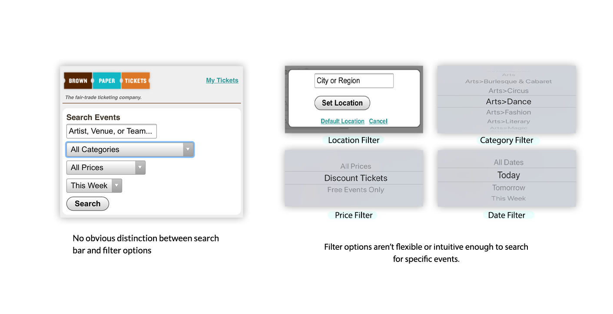
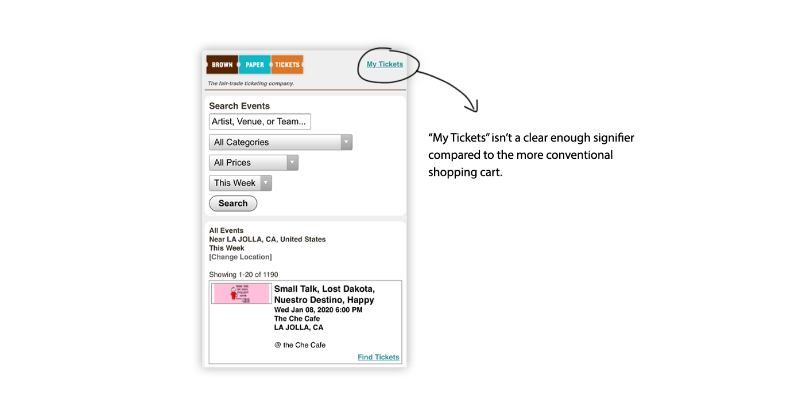
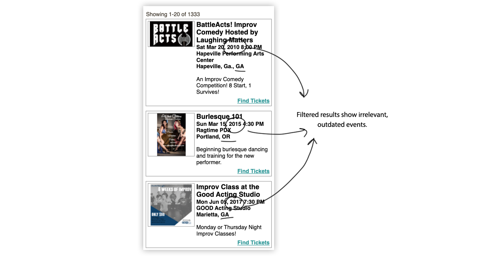
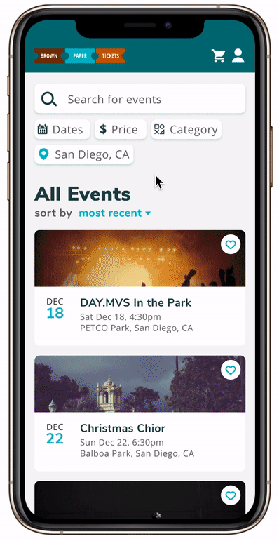

Understanding Brown Paper Tickets
Examining the current design
We interviewed a few UCSD students about their experiences with purchasing event tickets and asked them to try out Brown Paper Tickets. We compiled the top three usability errors that our users had when performing simple tasks.
Filters were difficult to use
Users had trouble filtering through specific dates, locations, prices, and event categories.
Shopping cart is hard to identify
Users couldn't navigate to their shopping cart to find tickets.
Filters weren't functional
The filters would reset, making users scroll through every listed event to find the correct one.
The Main Issue: Searching & Filtering
We decided to redesign the search bar and filter options. All of our users struggled with searching and filtering to find specific events.
Competitive Analysis
Before we dove into designing, we wanted to see how other event apps tacked their search and filtering.
Ticketmaster

Eventbrite
Stubhub
Ideating
Low-fidelity wireframes
We started off by sketching out different ways to make the searching on Brown Paper Tickets more intuitive and easier to use.
Prototype
A More Enjoyable Event Finding Experience
We combined the best ideas from our low-fidelity sketches and began prototyping. We created two high-fidelity prototypes, one of which promotes event browsing, one of which highlights the many filtering options. I primarily focused on prototype 2, but make sure to give the first prototype some love!
To simplify the searching experience, we put both the search bar and all the filtering options on the home page. There's also a sorting button to sort the displayed results based on the user's preference.
User Testing
Did our prototype resolve the difficult searching experience?
We interviewed four new users to use our prototype and isolated some major strengths and weaknesses:
Strengths:
- Intuitive and straightforward flow
- Filters were easy to apply
- Convenient to use
Weaknesses:
- Price isn't displayed on the event cards
- Users wanted more guidance on the search bar
- Lacked sorting features
- Missing "clear filter" function
Future Plans
Based on user testing, we would make the following changes:
- Display starting prices for each event on the event cards
- Instead of “Search for events”, include an example search on the search bar such as “Comedy Show” or “December Nights”
- Include other sorting options for the results
- Include a “Clear All” button for the filters